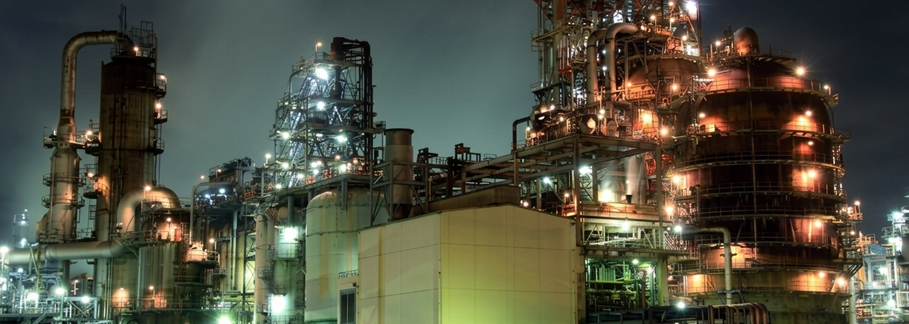

사업소개
사업소개
> 사업소개 > 시멘트
Cement시멘트
65년 기술이 집약된, 한일시멘트의 프리미엄 시멘트
-
01
1,560만톤
연간 시멘트 생산능력 — 업계 최고 수준의 스마트 생산시스템
-
02
23년 연속
2004년부터 2026년까지, '한국에서 가장 존경받는 기업' 시멘트 산업부문 1위
-
03
16년 연속
2010년부터 이어온 KS-QEI 한국품질만족지수 1위 기업
-
04
1964년
업계 최초 시멘트 수출 달성, 1970년 벌크 시멘트 출하도 업계 최초

4대 제품군으로 완성하는 시멘트 포트폴리오
일반 콘크리트부터 초고층·해양구조물까지, 용도에 맞춘 차별화된 시멘트를 생산합니다.
-
KS L 5201
- 포틀랜드 시멘트
- 특성과 용도에 따라 1종 보통부터 5종 내황산염까지 다섯 종류로 구분되는 가장 기본적인 시멘트입니다. 한일시멘트는 1종 보통 포틀랜드 시멘트를 주력 제품으로 생산하며, 고강도·저발열 시멘트 등도 함께 갖추고 있습니다.
- 일반 콘크리트댐·터널·도로포장보수·긴급공사
-
단열·발열·방수·습곡
- 고로슬래그 시멘트
- 포틀랜드 시멘트에 고로슬래그미분말을 균일하게 혼합하거나, 클링커와 고로슬래그·석고를 함께 분쇄해 제조합니다. 장기 강도 발현이 우수하며 수화열이 낮아 콘크리트 균열 제어에 유리해, 4개 공장에서 생산합니다.
- 해양 구조물매스 콘크리트PHC Pile
-
타입1·M
- 혼합 시멘트
- 고로슬래그 미분말과 플라이애시 등 포졸란 물질을 이용한 3~4성분계 혼합시멘트로, 1종 보통 포틀랜드 시멘트보다 수화열이 30% 정도 낮아 대단위 구조물의 온도 균열을 억제합니다.
- 초고층 기초지하구조물모르타르 제조
-
융합·발전
- 고로슬래그 미분말
- 용광로에서 선철 제조 시 발생하는 용융 슬래그를 물로 급랭시켜 만든 비정질 입자를 미분말로 분쇄한 것으로, 포틀랜드 시멘트 대체를 통한 경제성 확보는 물론 병해충 저항성이 뛰어난 규산질 비료로도 활용됩니다.
- 슬래그 시멘트규산질 비료경제성 확보
시멘트 제조공정
석회질·점토질·규산질·산화철 원료를 배합해 소성로에서 녹여 클링커를 만들고,응결지연제인 석고를 더해 분쇄하는 공정입니다.
-
- 원료 채광·분쇄
- 원료를 채광해 혼합·분쇄, 조합원료(Raw Mix)를 만듭니다.
-
- 소성 (Kiln)
- 소성로에 넣어 고온으로 녹여 클링커(Clinker)를 생산합니다.
-
- 혼합·분쇄
- 클링커에 응결지연제인 석고를 첨가해 미세하게 분쇄합니다.
-
- 생산·출하
- 품질검사를 거쳐 전국 생산거점과 유통망으로 출하됩니다.